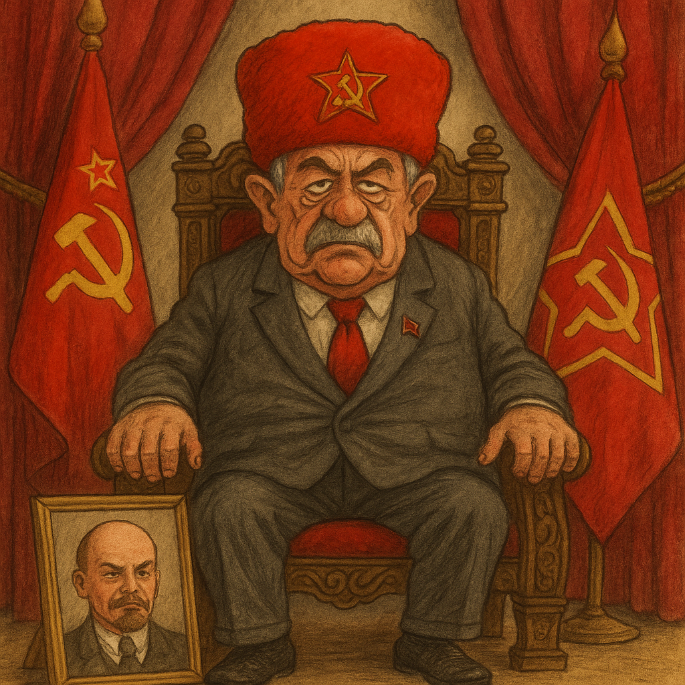

Publicado em 2025-05-16 12:35:28
Ou como o PCP se tornou o último museu vivo da Guerra Fria
Há coisas que resistem ao tempo: as pedras de Monsanto, o cheiro a bacalhau no Natal e... o PCP.
Sim, o glorioso Partido Comunista Português, que em tempos arrastou multidões e recitou “A Internacional” com lágrimas nos olhos e cravos na lapela, hoje é uma relíquia estalinista a tentar passar-se por alternativa política. É como assistir a um fax a tentar competir com o TikTok.
O que dizer de um partido que ainda chama “camarada” a quem discorda com menos de 60 anos? Que ainda acredita que há um proletariado fabril à espera de ser libertado por um comité central de bigodes e boinas? Que insiste que Putin é apenas “incompreendido pelo Ocidente imperialista”?
Enquanto os jovens do mundo discutem transição energética, inteligência artificial ou direitos digitais, o PCP fala de “revogação da ofensiva capitalista” com o entusiasmo de quem lê atas em papel reciclado da URSS. É a única força política do século XXI que ainda vive em 1976 — e, ironicamente, a sua visão do futuro é a continuação indefinida desse passado.
Nada diz mais sobre o atual estado do partido do que o seu desconfortável silêncio quando a Rússia invade a Ucrânia. Um silêncio “pensado”, diziam. Sim, pensado... com vodka e um retrato do Lenine a abençoar.
É que o PCP, na sua fidelidade geométrica ao antiamericanismo, foi-se tornando prisioneiro da sua cartilha binária: se é contra os EUA, então é bom. Mesmo que bombardeie civis, proíba partidos e mande opositores beber chá radioativo. O importante é resistir ao “imperialismo ocidental”. Mesmo que, para isso, tenha de se ajoelhar perante outro império — mais mafioso, menos disfarçado.
Hoje, o PCP é mais um ritual do que uma força. Tem os seus feriados próprios, a sua simbologia, os seus mitos, o seu dialeto ("massas populares", "aliança de classe", "papel do coletivo"). A cada eleição, perde votos mas mantém a liturgia. É como uma missa num dialeto extinto, onde todos já abandonaram a fé, mas ninguém ousa apagar a vela.
É o partido dos afetos à ditadura proletária e da saudade dos tempos em que o Muro de Berlim era “uma muralha de paz”.
Vivemos num país tão anedótico que o humor político já não é vanguarda — é redundância. Quando um partido sério saúda a Coreia do Norte como “experiência revolucionária” e ignora crimes de guerra com um franzir de sobrancelhas, o humorista fica sem emprego e sem punchline.
Portugal tornou-se a única democracia onde a sátira tem medo de parecer demasiado verosímil.
Nota final:
O PCP não morreu. Está mumificado em congresso permanente. Espera apenas que alguém lhe diga, com ternura: “Camaradas, o socialismo real foi cancelado. Mas há sempre lugar para vocês... num documentário.”
Por Augustus Veritas Lumen